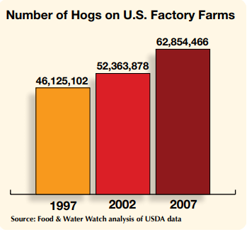

There have been plenty of outbreaks of human transmitted diseases as a result of industrial farming.
In recent history, the most horrific incident has been the spread of swine flu. As the name suggests, this is a disease that managed to spread from pigs to humans. The swine flu outbreak occurred in 2009 and is responsible for the deaths of over 200,000 people. It's crazy to think that a disease outbreak that occurred less than a decade ago managed to have a death toll this high.
This event has been shown to be directly connected to the rise of pig production. The graph on the right shows how drastically the pig population rose during the time period leading up to the disease outbreak. Public health officials have also found that workers at pork factories were direct links that allowed the disease to spread from animals to humans.
Avian flu first appeared in 1997 and the virus lead to a rapid decrease in chicken population. It has managed to kill millions of chickens The sudden emergence of the disease came at the same time period when countries began adopting factory farm methods for producing poultry. In particular, Asian countries such as the Phillipines, China, Vietnam, and Thailand had rapidly rising chicken populations.
In 2003, the disease became prominent when a strain broke out in the region, transmitting from bird to humans and resulting in the deaths of over fifty people in just two years. While the disease has become evolved to become less lethal (less chickens are now dying), this is a problem because the strain is becoming increasingly difficult to detect and wipe out in birds. If the viruses continue to spread, new, scarier, and potentially more lethal strains can become more widespread and this could lead to a global pandemic in the future. However, because industrial farming continues to produce chickens in mass quantities and in tight spaces, it is nearly impossible to check for the spread of the flu.